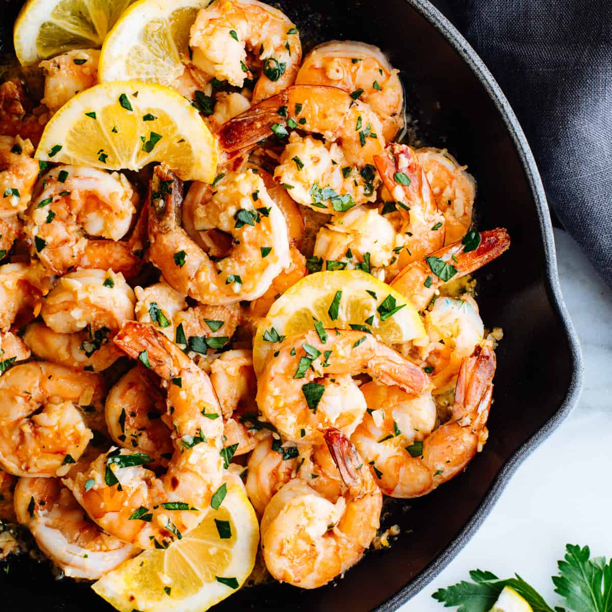

Lemon Shrimps

Ingredients
- 1 tablespoon olive oil, or as needed
- 16 large shrimp - peeled, deveined, and tails on, or more to taste
- 3 large cloves garlic, smashed, or more to taste
- ½ teaspoon crushed red pepper flakes, or to taste
- 2 teaspoons seafood seasoning (such as Old Bay®), or to taste
- salt and ground black pepper to taste
- 3 tablespoons chopped fresh parsley
- 2 tablespoons lemon juice
- 3 teaspoons lemon zest
Directions
- Gather all ingredients
- Heat oil in a large skillet over medium-low heat until warm, 2 to 3 minutes. Add shrimp, garlic, and pepper flakes all at once and stir together. Add seafood seasoning, salt, and black pepper and mix until combined.
- Heat oil in a large skillet over medium-low heat until warm, 2 to 3 minutes. Add shrimp, garlic, and pepper flakes all at once and stir together. Add seafood seasoning, salt, and black pepper and mix until combined.
- Reduce heat to low and stir in parsley, lemon juice, and lemon zest.